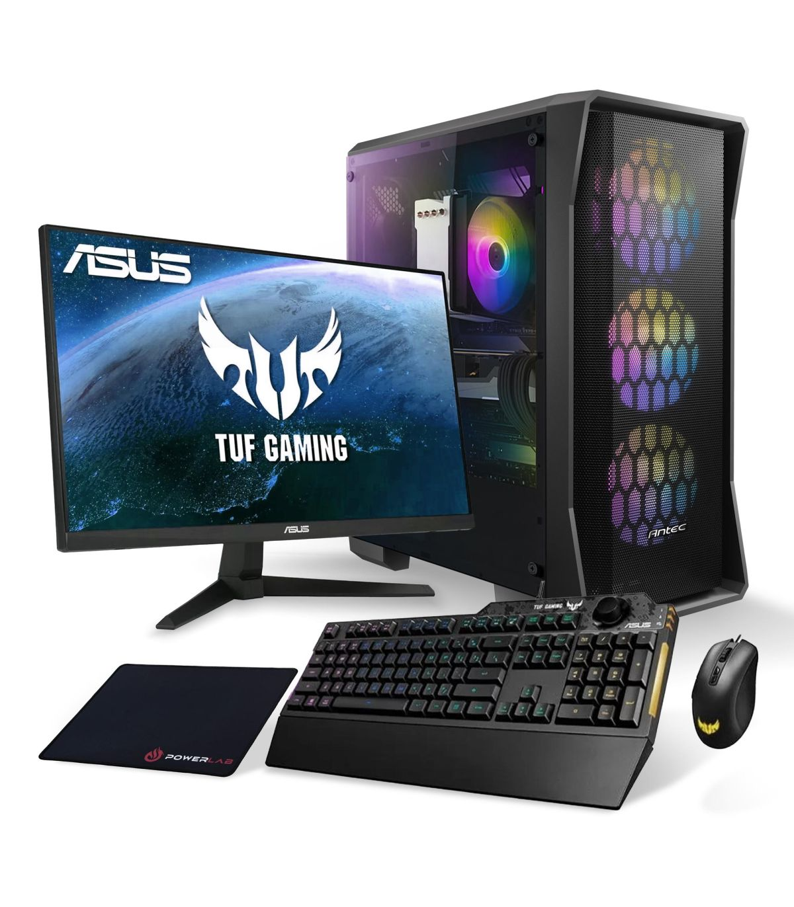

Un PC Gamer est conçu spécifiquement pour le jeu grâce à sa puissance et ses capacités supérieures à un ordinateur bureautique. Les composants ont été étudiés pour une utilisation intensive et pour gérer une importante consommation de ressources.
